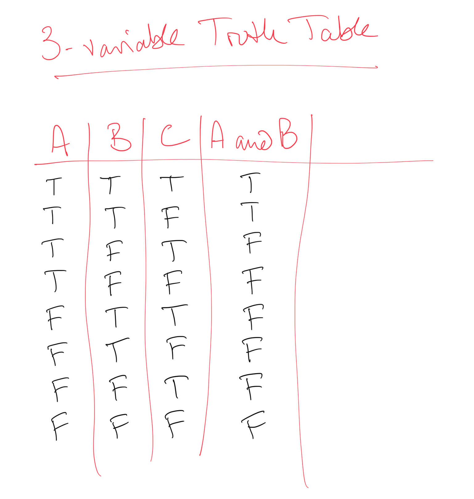
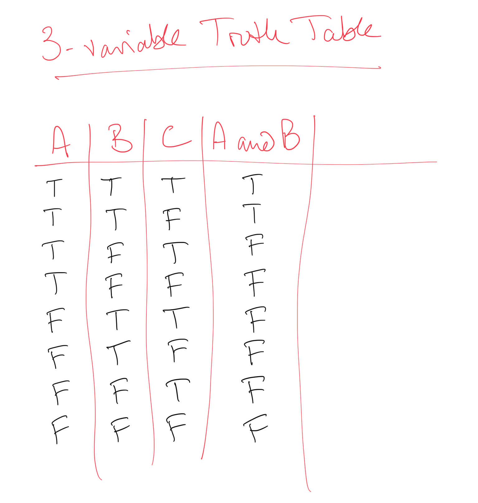

011 Python data types : Answers to exercises¶
Exercise 1¶
If the ASCII code for
eis101and the code fornis110, what is the code fora?
# ANSWER
msg = '''
e -> 101
n -> 110
since e is the 5th letter of the alphabet and n is the 14th
it follows that a is 101 - 4 == 110 - 13 = 97
so
a -> 97
Confirm this e.g. on http://www.asciitable.com/
'''
print(msg)
e -> 101
n -> 110
since e is the 5th letter of the alphabet and n is the 14th
it follows that a is 101 - 4 == 110 - 13 = 97
so
a -> 97
Confirm this e.g. on http://www.asciitable.com/
Exercise 2¶
in a code cell below, create a variable called
nameand set it to your nameprint the string name, and its length
comment on why the length is the value you find
# ANSWER
# in a code cell below, create a variable called `name` and set it to your name
name = 'Charlie Walker'
# print the string name, and its length
print(name,len(name))
# comment on why the length is the value you find
msg = '''
The string 'Charlie' has 7 characters
the string 'Walker' has 6 characters
plus we have a space iun the middle
so, the length we would expect is 7 + 6 + 1 = 14
This is what is returned by len(name)
'''
print(msg)
Charlie Walker 14
The string 'Charlie' has 7 characters
the string 'Walker' has 6 characters
plus we have a space iun the middle
so, the length we would expect is 7 + 6 + 1 = 14
This is what is returned by len(name)
Answer¶
We could find this by examining ASCII code tables and see that a (lower case a) has the code 97.
Alternatively, we could search for help on this topic, and find that the python function ord() converts from string to ASCII code:
# ANSWER
print("the ASCII code for 'a' is",ord('a'))
the ASCII code for 'a' is 97
Alternatively, we might notice that n is the 14th letter of the alphabet, and ethe 5th, so the code seems to be 97 + N where N is the order the letter appears in the alphabet. We can confirm this with the 15th letter o which we see from above has the code 111.
Exercise 3¶
insert a new cell below here
set a variable called message to contain the string
hello worldprint the value and data type of the variable message
# ANSWER
# set a variable called message to contain the string hello world
message = 'hello world'
# print the value and data type of the variable message
print(message,type(message))
hello world <class 'str'>
Exercise 4¶
Since the energy level expressed in $J$ is quite small, we might more conveniently express it in units of eV. Given that:
$$ 1\ Electron\ volt\ (eV) = 1.602176565 \times 10^{-19} J $$
Insert a new cell below here
calculate the energy associated with a blue photon at 450 nm, in eV
confirm your answer using a web calculator
# Answer
# Copy mostly from above:
# values of c and h
c = 2.99792458e8
h = 6.62607015e-34
print(h * c)
# wavelength in nm: BLUE
# calculate the energy associated with a blue photon at 450 nm, in eV
l_nm = 450.0
# wavelength in m
l_m = l_nm * 1e-9
# Planck-Einstein in J
E_J = h * c / l_m
# conversion formula given above
E_eV = E_J / 1.602176565e-19
print('Photon of wavelength', l_nm, 'nm')
print('has an energy of', E_eV, 'eV')
# which compares with 2.75520 eV given in the web calculator
1.9864458571489286e-25
Photon of wavelength 450.0 nm
has an energy of 2.7552045282834468 eV
Exercise 5¶
insert a new cell below here
using integer arithmetic, print the result of:
2 to the power of 8
1024 divided by 2
set a variable called
xto the result of 7 (floor) divided by 3.print the value of
x, and confirm its data type isint
#
# answer
# using integer arithmetic, print the result of:
# 2 to the power of 8
print(2**8)
# 1024 divided by 2 integer division (floor)
print(1024 // 2)
# set a variable called x to the result of 7 divided by 3
x = 7 // 3
print('Integer: 7 divided by 3 is', x, type(x))
# We contrast this with the use of /
# which results in a variable of type float
x = 7 / 3
print('7 divided by 3 is', x, type(x))
256
512
Integer: 7 divided by 3 is 2 <class 'int'>
7 divided by 3 is 2.3333333333333335 <class 'float'>
Exercise 6¶
Insert a new cell below here
Set a variable called
is_class_todayto the valueTrueprint the variable name, its value, and its data type
# ANSWER
# Insert a new cell below here
# Set a variable called `is_class_today` to the value `True`
is_class_today = True
# print the variable name, its value, and its data type
print('is_class_today',is_class_today,type(is_class_today))
is_class_today True <class 'bool'>
Exercise 7¶
Insert a new cell below here
write a statement to set a variable
xtoTrueand print the value ofxandnot xwhat does
not not xgive? Make sure you understand why
# ANSWER
# write a statement to set a variable x to True
x = True
# and print the value of x and not x
print('x is',x)
print('not x is',not x)
# what does not not x give?
print('not not x is',not not x)
msg = '''
answer
------
not not x is the same as just x
A double negative cancels out, in effect
'''
print(msg)
x is True
not x is False
not not x is True
answer
------
not not x is the same as just x
A double negative cancels out, in effect
# ANSWER
# do the testing here e.g.
print (True or False)
True
| blank | A and B | A or B |
|:—:|:—:|:—:|
|  |
|  |
|  |
|
Exercise 9¶
Copy the 3 variable truth table from above onto paper
fill out a column with
A and Bfill out a column with
((A and B) or C)Try some other compound statements
If you are unsure, or to check your answers, test the response using code, below.
# ANSWER
# do the testing here e.g.
print ((True and False) or True)
True
| blank | A and B | ((A and B) or C) |
|:—:|:—:|:—:|
|  |  |
|  |  |
|
# ANSWER
# write a statement to set a variable x to True a
x = True
# print the value of x
print('x is',x)
# print the value of not x
print('not x is',not x)
# what does not not x give?
print('not not x is',not not x)
# not not cancels out (double negative)
x is True
not x is False
not not x is True
# ANSWER
# Set a variable called `is_class_today` to the value `True`
is_class_today = True
# print the variable name, its value, and its data type
print('is_class_today',is_class_today,type(is_class_today))
is_class_today True <class 'bool'>
Exercise 10¶
insert a new cell below here
copy the code in the cell above, set
start_numberto0, and runWhat are the boolean representations of
0and1?
What would happen if you set
start_numberto the string'zero', and why?
# ANSWER
# copy the code in the cell above, and set start_number to 0
start_number = 0
print("starting with", start_number)
int_number = int(start_number)
print('int_number', int_number, type(int_number))
# now convert to float
float_number = float(int_number)
print('float_number', float_number, type(float_number))
# now convert to str
str_number = str(int_number)
print('str_number', str_number, type(str_number))
# now convert to bool
bool_number = bool(int_number)
print('bool_number', bool_number, type(bool_number))
# What is the boolean representation of 0?
msg = '''
What would happen if you set start_number to the string 'zero', and why?
Answer
------
1 -> True
0 -> False
If we set start_number to 'zero' then int('zero') will fail
because it cannot convert a word representation of this sort to an integer
only a character representation such as '0' or '1'
'''
print(msg)
starting with 0
int_number 0 <class 'int'>
float_number 0.0 <class 'float'>
str_number 0 <class 'str'>
bool_number False <class 'bool'>
What would happen if you set start_number to the string 'zero', and why?
Answer
------
1 -> True
0 -> False
If we set start_number to 'zero' then int('zero') will fail
because it cannot convert a word representation of this sort to an integer
only a character representation such as '0' or '1'